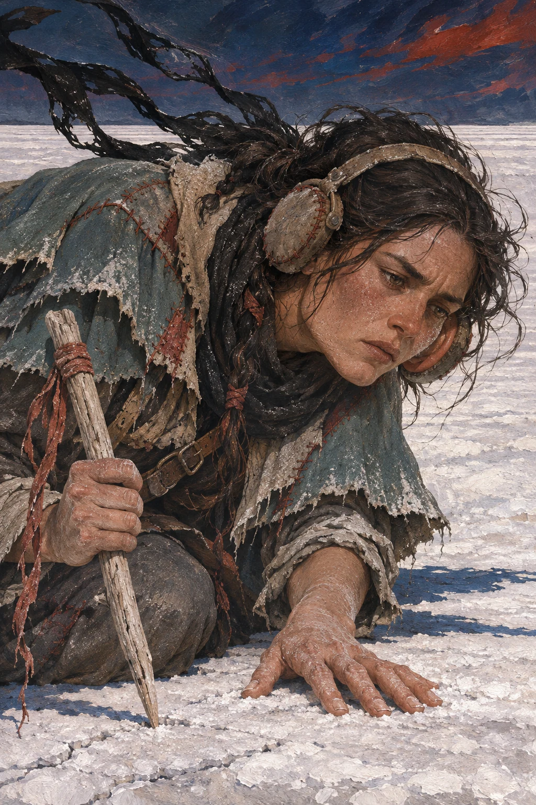

Пройти Звонкие плиты по борозде и не потерять воду.

Лута Сенн
Если партия изменила план
Если воду заранее разгрузили
Сверьте число бочек на буксире. Спасать на льду можно только то, что отправили вперёд. Если шлюпка прошла пустой, выбор теперь у каменного острова: ждать подвоз или расходовать запас, который уже здесь.
Игроки раскрыли тайну раньше
Сверим кольцо обратного следа со швом на панцире. Попробуем изменить ход и проверим, повернулся ли гребень следом. Доступные свидетельства — Кольцо обратного следа, Светлый шов на панцире. Зверь обходит охотников к пути отхода. По незажившему шву его можно опознать, не отрезая группе дорогу назад. Метим свободную линию отхода вдали от заднего следа. Знаем, что Белорез может выйти за охотниками. Снимаем приманку и предупреждаем лодки; отстоять своё решение придётся при дележе платы.
Партия уступила поле
Шлюпка и две бочки остаются в рассоле, корка не держит людей. Принимаем людей с твёрдого края, поклажу считаем отдельно. Режем буксир и подбираем людей с твёрдых плит. На черту приходим без этой воды и можем уйти с пустыми руками.
Рассвет второго дня. Полозья «Седьмой доли» шипят по соли, и от каждого толчка вздрагивает вдовий платок на мачте. Порог давно ушёл за спину, его крыши растворились в белой дымке; вокруг только дно, и небо над ним того же цвета, что соль. Впереди лежат Звонкие плиты — равнина белых пластов, ровных, как столы в трапезной. Ветер задевает их, и каждая тихо звенит своей нотой: одна низко, как колокол на дальней колокольне, другая высоко, третья с трещиной, будто надколотая чашка. Охотники Порога говорят, что по этим плитам можно сыграть песню, если знать, куда ступать, — и что петь её не стоит. Между плитами выступает тёмный камень, а местами лежит лишь тонкая корка, под которой угадывается мокрая густая белизна. Соль на ресницах схватилась коркой, и моргать больно. У края плит, на плоском камне, кто-то сидит и не оборачивается на шум полозьев.
Подготовка и роли
Вечер 2: день перехода по Звонким плитам. Перерыв 20 минут — после второй сцены. Сверьте лист в начале: след 3 (4, если гнались ночью), вода 7 (6 без седьмой доли и долга), шлюпок 2. Что менять и как говорить: чтение следа верное +1, ошибка +2 (метки Тарона: след ±0, вода −1); тихий ход след −1 и вода −1; провал тихого хода — вода −1 без следа −1; бой +1; утонувшая бочка −1; несолёная кровь ночью +1; ночь −1 вода. Называйте обе цены перед выбором тихо или быстро. Лута на равных — вода −1 каждую вторую ночь. Не освобождённая шлюпка — шлюпки −1. Расчёт: осторожный стол кончает вечер при следе 4, воде 5; средний (верное чтение, напрямик, одна бочка утонула, кровь засолена) — 5 и 5; шумный (погоня, кровь ночью) — 6 и 4. Резунов в бою «Корка ломается»: 2 при 3 игроках, 3 при 4, 4 при 5, 5 при 6–7 (блок рифовой акулы). Под коркой резуна водит ведущий вручную до 6 клеток; под коркой они не цель. Кольцо — первая часть рассказа следа («Кольцо обратного следа»); Лута не знает шва и маршрут называет предположением. Если Лута не с отрядом, в сцене 3 она всё равно рядом: плиты её дорога.
Тарон читает борозду, ставит метки и объясняет простыми словами, что видит; Лута — собеседница, а не замена.
Дерва рулит шлюпкой в проломе, решает, что бросить первым: бочку или лодку, и несёт гарпун Любавы на линь.
Сельма солит кровь резунов погребальной солью и слушает, как Лута называет свои молчания; ни соль, ни разговор не требуют класса.
Места 4–7: Эйран слушает, на какой ноте звенит каждая плита, и отмечает пятна; Ната держит линь шлюпки в проломе; Воск торгуется с Лутой о цене; Рива спрашивает Луту, по кому она молчала. При 6–7 игроках одна пара идёт пешком по краю плит с Лутой, другая ведёт ладью, и они сходятся у острова.
Сцена 1 · 50 минут
Палочка Луты
Это женщина в коротком плаще; на ушах у неё старые наушники, затёртые до блеска, — простая кожа и войлок, никакого колдовства. В руке тонкая палочка, и ею она касается края борозды, что тянется мимо камня. Борозда здесь двоится: края одной осыпались и подсохли, края другой ещё блестят мокрым рассолом. Следопыты дна читают борозду по краям, как плотник читает доску по срезу, и берут за это воду, а не деньги. Ветер посвистывает в снастях, корка под полозьями тихо потрескивает. Женщина, так и не подняв головы, поднимает ладонь свободной руки: тише.
Ладья стоит на камне у края плит. Ведущий сверяет лист следа и называет числа вслух: «След три, вода семь, шлюпок две» (или что стоит на листе). Если ночью гнались за гребнем, след уже четыре, и читать борозду не нужно: вы идёте по ней. На камне у края сидит женщина в коротком плаще, в затёртых наушниках без магии, и ставит палочку на край борозды. Борозда двоится: одна осыпалась, края другой ещё мокрые. «Тише. Он слышит полозья лучше, чем вы меня», — говорит Лута Сенн и не поднимает головы. Потом, глядя на стойку гарпунов: «Читаю след за бочку воды. Или иду на равных, до башни, без капитана над собой. Меня нанимают вести вперёд. Назад смотреть — бесплатно». Отряд решает: читать самим, заплатить бочкой или взять Луту на равных. После чтения Лута ведёт палочкой вдоль мокрой борозды. Она не уходит на восток, а описывает широкую петлю и замыкается за остатками старой стоянки прежней артели. Внутри кольца соль нетронута. «Это кольцо. Он не ушёл. Он обошёл и встал у них за спиной», — говорит она и впервые поднимает глаза. «Я видела такие после каждого удара. Молчала. Нанимали вести вперёд». Осложнения по желанию ведущего: соль схватила ресницы коркой — кто читает борозду без повязки, читает с помехой, а повязку из шарфа предлагает Лута; и буксирный линь шлюпки перетёрся о камень — если его не перевязать сейчас, в сцене 3 шлюпка провалится дальше от острова.
Выборы
Прочесть борозду самим: Тарон или другой следопыт ставит руку на край.
Заплатить Луте бочкой воды за одно чтение, и она остаётся на плитах.
Взять Луту на равных: она идёт с отрядом и пьёт из общих бочек — каждую вторую ночь вода −1 (вечера 3, 5, 7).
Обойти кольцо целиком пешком, не расспрашивая Луту; перевязать буксирный линь.
Проверка и путь без броска
Мудрость (Выживание) Сл 12, Тарон или любой следопыт. Успех: верная борозда, след +1 (3 → 4). Провал: ошибка следопыта, след +2 (3 → 5); метки Тарона после провала — «не знаю»: след ±0, вода −1. Без броска: Лута читает верно, след +1; за бочку — вода −1 сейчас; на равных — бочка каждую вторую ночь, и Лута идёт с отрядом. Нет бочки — нет и этой цены. Если гнались ночью, чтение не нужно, след остаётся 4. Кольцо («Кольцо обратного следа»): Лута показывает без броска; без неё — обойти кольцо до конца сцены.
Если не получилось
Провал чтения не прячет кольцо: Лута, увидев ошибку, молча ведёт палочкой вдоль настоящей борозды, и кольцо находят. Цена ошибки — след 5 вместо 4. Отряд не получает преимуществ за то, что пошёл по ложной колее, но и не теряет улику.
Сцена 2 · 50 минут
Поющие плиты
Ладья выходит на середину Звонких плит, и равнина отзывается на каждый толчок полозьев. Звон бежит от плиты к плите, как по струнам, и возвращается со всех сторон сразу. Стойка гарпунов у борта тонко дребезжит в ответ, бочки глухо плещут, в швах одежды хрустит соль. Парус полон западным ветром и гудит громче всего. Старые охотники Порога обматывали полозья парусиной ещё до промысла: по их поверью, плиты помнят каждого, кто прошёл по ним с шумом. По левую руку тянется край, где плиты сходят на тёмный камень. Впереди лежит гладкая белизна, и с каждым саженем она звенит громче.
Плиты поют под полозьями: низкая нота, высокая, треснувшая, и вся равнина отвечает. Ведущий просит назвать роли: рулевой, следопыт, дозорный, бочкарь. Любой класс может быть кем угодно, и совмещать роли можно. Лута сидит на корме, если её наняли на равных, или идёт по краю плит пешком, шагов на тридцать правее: плиты — её дорога домой. «Парус поёт громче всех. Шесты — тише. Полозья обмотайте парусиной», — говорит она вполголоса. Дозорный на мачте слышит второй звон, не тот, что ветер выбивает из плит. Он идёт снизу, из-под корки, глубже и ниже. «Тише. Слышишь? Плиты звенят вверх. Это — вниз». Стойка гарпунов дрожит и тоже поёт, бочки глухо плещут, в швах одежды хрустит соль. Выбор очевиден и дорог: быстро, парусом, или тихо, на шестах, с обмотанными полозьями. Ведущий называет обе цены вслух: «Тихо — след минус один, вода минус одна бочка. Парусом — ничего не меняется, и звон остаётся на вашей совести». Лута ставит палочку на борт: «Тихо — дорого. Громко — дороже. Платить вам». Осложнения по желанию ведущего: на плитах бочка дала течь — бочкарь затыкает её всю сцену и не держит своей роли, иначе к ночи вода −1; и чужой звон идёт за ладьёй — если она стоит, он уходит, если идёт, звенит ближе.
Выборы
Тихий ход: шесты вместо паруса, полозья в парусину.
Напрямик под парусом: быстро, без трат, шумно.
Послать дозорного вниз на корку послушать звон, пока ладья стоит.
Спросить Луту о том, что слышно под плитами, и о том, как зверь слушает.
Проверка и путь без броска
Тихий ход: Ловкость (Атлетика или Акробатика) Сл 12, рулевой. Успех: без потерь, след −1 (например, было 4, стало 3), вода −1 (7 → 6). Провал: шест ломается, плиты звенят на всю равнину; вода −1, но след −1 не даётся. Без броска можно идти ещё медленнее: след −1, вода −2 всего. Напрямик под парусом: след и вода без изменений. Чужой звон дозорный слышит без броска; Внимательность Сл 12 лишь определяет, откуда он идёт (с востока, из-под края плит). Все числа ведущий называет вслух и отмечает карандашом на листе следа.
Если не получилось
Провал не останавливает ладью: треснувший шест кидает звон по плитам, чужой звон под коркой отвечает громче и ближе. В сцене 3 первый резун всплывает рядом с проломом уже в раунде 1, а Лута успевает крикнуть предупреждение. Шесты запасные, ход продолжается без дополнительных штрафов.
Сцена 3 · 50 минут
Корка ломается
Плиты редеют, и между ними всё чаще проступает тонкая корка в серых мокрых пятнах, похожих на следы пролитого молока. На западе, совсем близко, поднимается каменный остров, и на его вершине чернеет старый ворот: им когда-то вытаскивали застрявшие ладьи. Солнце низкое, тени вытянулись на восток. Буксирная шлюпка идёт за кормой на линё, подпрыгивает на стыках, и платок на её носу хлопает на ветру. Звон под полозьями становится глуше, словно корка истончилась до барабанной кожи. Буксирный линь вдруг натягивается струной, и шлюпка за кормой резко оседает.
К концу дня плиты редеют. На западе виден каменный остров с воротом, на востоке корка тонкая, в пятнах. Буксирная шлюпка с двумя бочками воды под хлопающим платком на носу вдруг оседает: корка проламывается, и она встаёт в рассол по борта. Звон плит стихает. И под коркой слышен ответный звон. Ведущий говорит: «Под солью что-то идёт на звук». Лута хватает палочку и гарпун со стойки. «Тише. Не стойте на пятнах. Он слышит шаг. Бочки на камень — лодку потом», — говорит она. «Лодка — дерево. Бочка — это вы». Бой «Корка ломается» (состав — по встрече): резуны, белые и слепые, с гребнями, как у ножа, идут под коркой на того, кто несёт бочку, иначе на того, кто прошёл через пятно, иначе на ближнего. Всплыв, они кусают и остаются на поверхности до своего следующего хода; на половине хитов уходят под соль. Цель — вынести обе бочки на камень и освободить шлюпку, а не убить зверей. «Если кровь на корке — несите соль», — говорит Лута. В конце раунда 5 корка под шлюпкой уходит, и всё, что осталось на ней, тонет — и сама шлюпка, если её не освободили. Освобождённую ладья вытягивает воротом. После боя — стоянка на камне; ведущий вычитает бочку за ночь.
Выборы
Нести бочки на камень двумя героями, передавая друг другу.
Сначала вытянуть шлюпку: вдвоём рядом с ней, каждый действием.
Увести резунов в сторону шумом по пятнам, чтобы выиграть раунды.
Бросить одну бочку и спасти шлюпку, или наоборот.
Проверка и путь без броска
Бой «Корка ломается» (обязательный, лёгкий): резунов 2 при 3 игроках, 3 при 4, 4 при 5, 5 при 6–7. Бочку берёт герой рядом со шлюпкой действием и несёт вдвое медленнее; передать соседу можно бесплатно раз в ход. Шлюпку освобождают двое рядом с ней, каждый действием в одном раунде без броска, либо один — Сила (Атлетика) Сл 12. Шкалы: бой след +1 (средний стол: 4 → 5); каждая утонувшая бочка вода −1; не освобождённая к концу раунда 5 шлюпка тонет — шлюпки −1 (последняя не тонет, а получает пробоину и ходит на шестах); убитый на корке резун — кровь, ночью след +1, если не засолить (соль Сельмы без траты времени; иначе дозорный солит всю ночь и стоит дозор один). Ночь на камне: вода −1.
Если не получилось
Если бочку не спасли, она уходит под соль, и ведущий вычёркивает её на листе: вода −1 за каждую. Если шлюпку не освободили, она уходит под корку, и бочкарь вычёркивает клетку шлюпки; отряд ночует на камне среди плит, ослабленным, но живым, и в темноте ветер ещё звенит плитами.
Кольцо обратного следа
Свежая борозда описывает на плитах широкую петлю и замыкается за остатками старой стоянки прежней артели. Внутри кольца соль нетронута.
Что можно установить
Зверь не ушёл. Он обошёл артель кругом и вышел к её пути отхода, ей за спину. Он выходит туда, куда охотники уходят после удара.
Получение
Лута показывает палочкой край борозды и ведёт вдоль кольца. Либо обойти кольцо до конца сцены: без броска; Выживание Сл 10 лишь сокращает время.
Запасной путь
Если Луты нет и кольцо не обошли, Тарон, коснувшись борозды у старой стоянки, замечает, что она замыкается там, куда уходили люди.
Изменения после решений
Если Лута нанята как равная и идёт с отрядом. → Она идёт с отрядом и пьёт из общих бочек: каждую вторую ночь (вечера 3, 5, 7) вода −1. В вечер 5 она сама кладёт рисунок кольца на стену Острема и решает, идти ли дальше. Если её нанимали за воду или не нанимали, она остаётся на плитах, и рассказ следа в вечер 5 отряд читает по стене.
Если Кровь убитого на корке резуна не засолили. → Ночью след +1, и дозорный слышит гул под стоянкой; если кровь засолили (соль Сельмы без траты времени), метка ночью не растёт.
Завершение вечера
Ладья ночует на камне среди плит. Ветер звенит ими до утра — низко, высоко, с трещиной, — платок на мачте шевелится, а Лута, если она с отрядом, ставит палочку на край следа и не спит. Ведущий называет итоговые числа вслух и отмечает их на листе; что стало со шлюпкой, провалившейся в рассол, видно по клетке, которую бочкарь закрасил или оставил. Борозда за островом уходит на восток, к чёрным панцирям Чёрной линьки, и на рассвете над ними поднимется чужой парус с сетью на мачте.